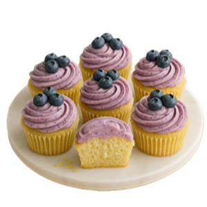
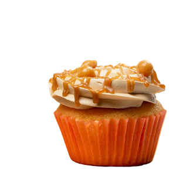
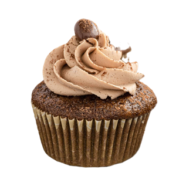
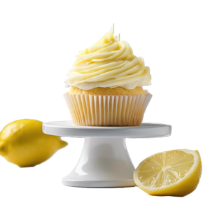
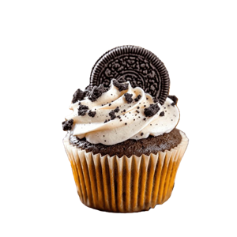

A cupcake is a small,
individual-sized cake baked in a paper or aluminium cup. It is soft, fluffy, moist and
delicious, usually decorated with creamy frosting, chocolate, sprinkles, fruits or other
toppings.
Cupcakes are perfect for birthdays, parties, celebrations and as a sweet treat for everyday
cravings.
Why Choose Sugar Bliss Cupcakes?
At Sugar Bliss, we make every cupcake with love using fresh ingredients, delicious flavours and
beautiful decorations. Our cupcakes are perfect little treats to make your special moments even
sweeter.
Small in Size, Big in Happiness! 🧁

Blueberry cupcakes are soft and fruity desserts filled with juicy blueberries. Their sweet and slightly tangy flavour creates a delicious combination. They are topped with blueberry buttercream and fresh blueberries for an attractive finish.

Butterscotch cupcakes offer a delicious combination of buttery sweetness and caramel flavour. They are prepared with a soft cake base and topped with creamy butterscotch frosting, caramel sauce and crunchy praline pieces. Every bite gives a wonderful balance of sweetness and crunch.

Coffee cupcakes are delicious treats for coffee lovers. Prepared with coffee-infused cake batter, they offer a rich aroma and a balanced coffee flavour. They are topped with smooth coffee buttercream or mocha frosting and a little cocoa powder.

Lemon cupcakes are light, soft and refreshing desserts with a pleasant citrus flavour. Prepared with fresh lemon juice and lemon zest, they offer a perfect balance of sweetness and tanginess. They are decorated with lemon-flavoured frosting for a refreshing finish.

Oreo cupcakes are a perfect combination of chocolate cake and crunchy Oreo cookies. The soft chocolate base is mixed with crushed Oreo biscuits and topped with cookies-and-cream frosting. A whole Oreo cookie on top makes these cupcakes even more attractive and irresistible.